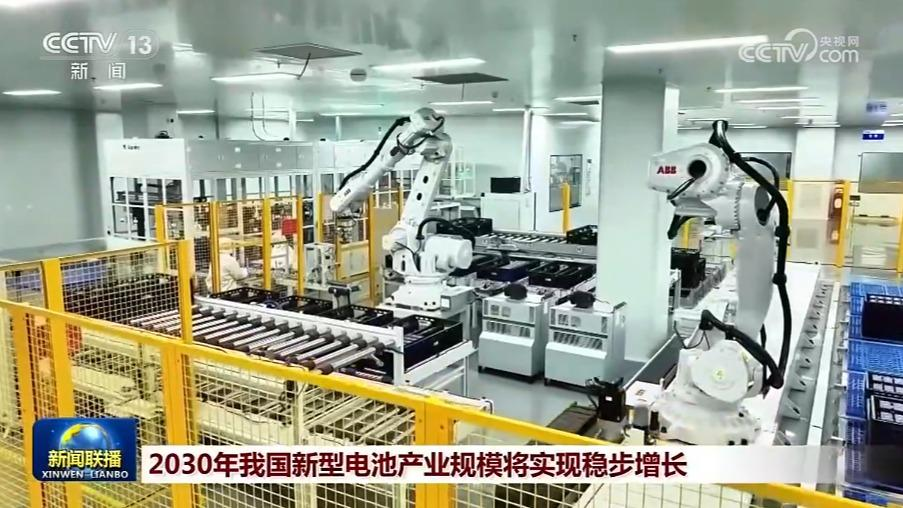
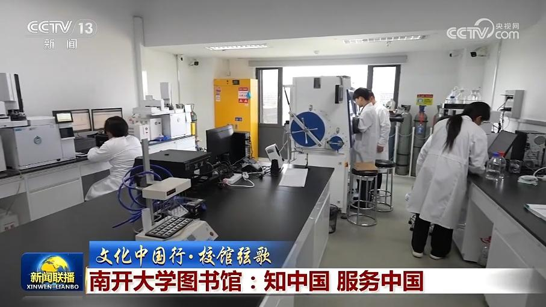
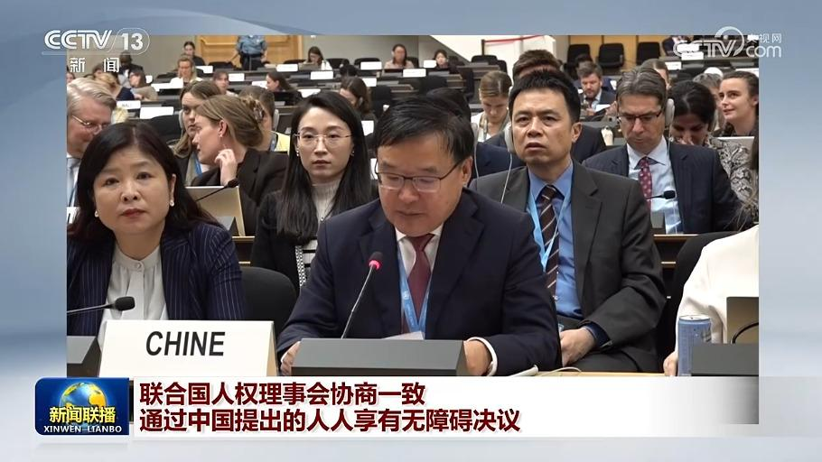

01
【新思想引领新征程】大食物观里的中国味道
习近平总书记强调，要树立大食物观，从更好满足人民美好生活需要出发，掌握人民群众食物结构变化趋势，在确保粮食供给的同时，保障肉类、蔬菜、水果、水产品等各类食物有效供给，缺了哪样也不行。

习近平总书记强调，要树立大食物观，从更好满足人民美好生活需要出发，掌握人民群众食物结构变化趋势，在确保粮食供给的同时，保障肉类、蔬菜、水果、水产品等各类食物有效供给，缺了哪样也不行。
这个国庆假期，祖国各地活动丰富多彩，处处洋溢着喜庆祥和的节日氛围，人们欣赏美景，礼赞幸福生活。
记者从交通运输部了解到，今天（10月6日）全社会跨区域人员流动量超3亿人次。全国交通出行迎来返程高峰。
今年以来，“六张网”建设全面铺开，带来数万亿元投资机遇，为民营企业打开了发展新空间。那么，如何激活民间投资、激发民企活力？来看今天（10月6日）的一线调研。

工业和信息化部、国家发展改革委等七部门近日联合印发《新型电池产业发展“十五五”规划》（以下简称《规划》）。《规划》提出到2030年，我国新型电池产业规模实现稳步增长，产业全链条创新能力持续增强，全固态电池初步实现规模化应用，长寿命锂电池循环寿命达到15000次。新型电池技术高效赋能智能终端产品和汽车、船舶、航空、智能机器人等领域电动化，服务全球经济绿色低碳发展。……
由国务院新闻办举行的2026年“外媒看中国”系列主题采访活动日前结束，多国媒体记者走进北京、上海、内蒙古等7省区市，了解“十五五”开局起步之年，各地高质量发展扎实推进的生动实践。

《文化中国行·校馆弦歌》，今天（10月6日）走进南开大学图书馆。从烽火岁月里的读书救国，到一代代学人扎根大地、躬身实践，“知中国、服务中国”的精神血脉，在这里代代相传。
国务院安委办调度国庆假期安全防范工作

5日，联合国人权理事会第63届会议协商一致通过中国代表47国提出的“无障碍建设促进所有人享有人权”决议。中国代表表示，本次决议草案着眼人口老龄化，致力于推动无障碍和适老化建设；聚焦人工智能等新兴技术带来的机遇和挑战，呼吁各国在新兴数字技术开发使用中，坚持创新、包容、开放、公平、安全、可靠等原则，促进无障碍信息交流。
据也门媒体5日报道，也门政府军当天在多条战线取得成果，在曼德海峡地区、祖巴卜机场、红海港口城市穆哈等多地击败胡塞武装，向前推进。目前行动仍在继续。胡塞武装发言人叶海亚今天（10月6日）称，该组织仍控制着所有近期攻下的区域，并持续打击敌方力量。
俄罗斯外交部发言人扎哈罗娃5日表示，日本政府日前以乌克兰局势为由，对俄实施非法制裁，包括首次涉及航运领域的限制措施，这使得所剩无几的俄日关系基础进一步受损。扎哈罗娃表示，高市政权虚伪地宣称相关措施是为了促进和平解决冲突，其实际目的是试图让俄罗斯遭受“战略失败”。日方做法不仅无助于实现持久和平，反而会让和平更加遥远。扎哈罗娃强调，日方表现出对国际法和双边协定的漠视。……
联合国秘书长呼吁加沙地带实现持久和平
金秋时节，五谷丰登，大江南北，丰收正忙。节目的最后，让我们走进希望的田野，一同感受丰收的喜悦。